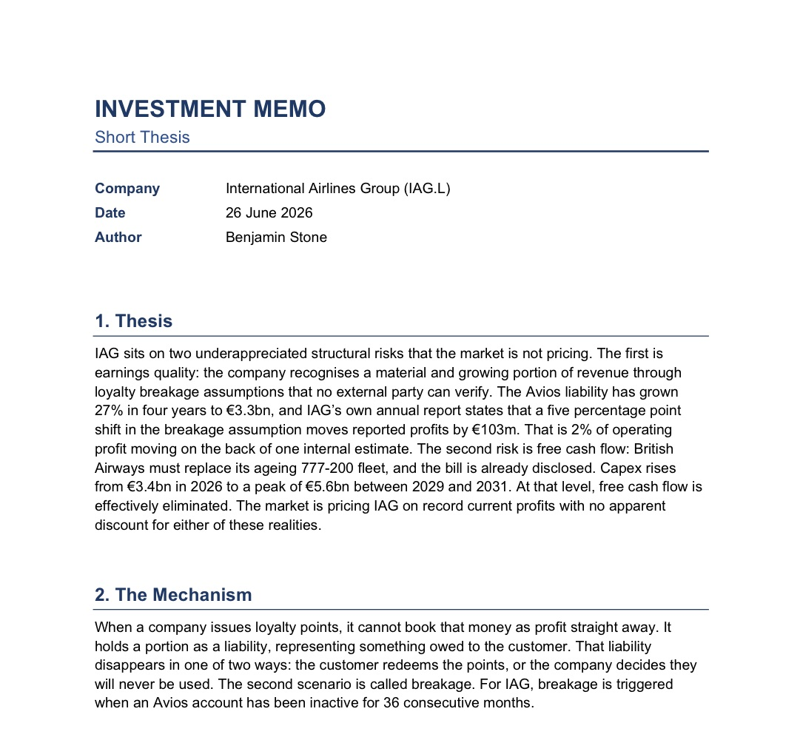
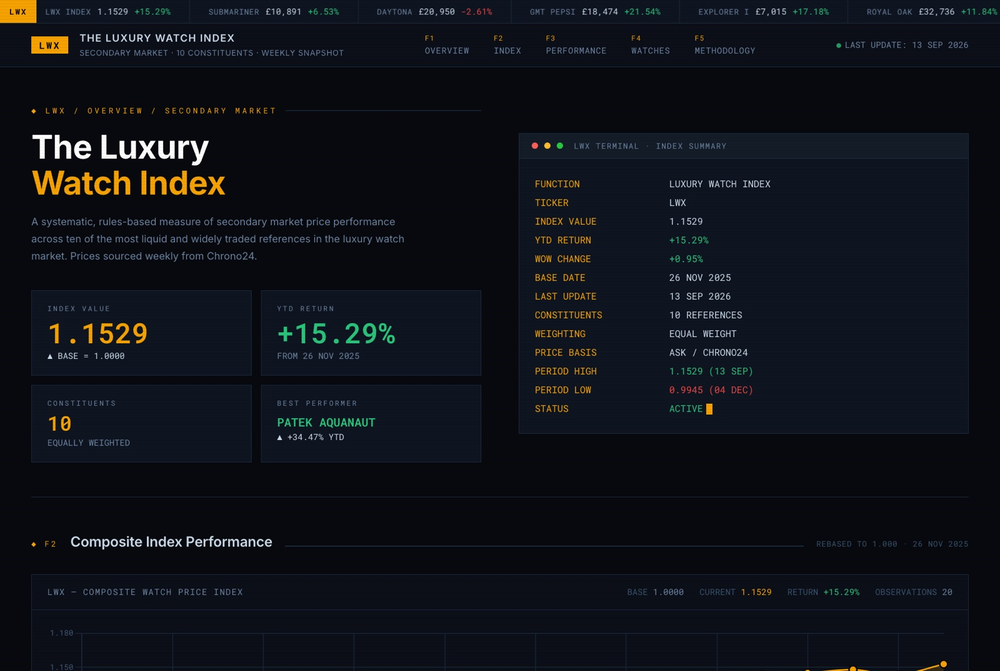

Projects
Two projects I’ve done outside university: a research memo on how IAG accounts for its Avios loyalty points, and an index of luxury watch resale prices that I’ve kept updated since November 2025.
- On this page
- IAG / Avios memo
- Luxury Watch Index
IAG / Avios: Loyalty Breakage Research Memo
When Avios points expire unused, IAG books their value as profit. How much it books depends on an internal estimate called “breakage.” I hadn’t seen analysts look at it closely, so I went through IAG’s annual reports to work out how much profit depends on that estimate, and whether anyone checks it.

-
€2,630m → €3,348m
Growth in the Avios liability from 2022 to 2025, up 27%
-
€51m → €285m
The part of the liability movement the disclosures don’t explain, up roughly fourfold
-
€103m
How much profit moves if the breakage estimate shifts by 5 points, according to IAG
-
~14 points
The change in the breakage estimate that would account for the 2025 residual. Normal year-to-year changes are much smaller
I didn’t end up with a confirmed short. There may still be a legitimate accounting reason for the residual, and I haven’t ruled that out. What I got from it was the process: finding a growing, judgement-based number that analysts treat as good news, measuring how much it matters from IAG’s own filings, and knowing when the evidence isn’t strong enough to trade on.
The Luxury Watch Index (LWX)
+15.29%
Since I started it in November 2025

The index follows resale prices for 10 luxury watch models, each weighted equally. Two or three times a month I pull the asking prices for each watch from Chrono24, take the median, and compare it with that watch’s price on the start date. The average across all ten gives the index level.
The live site has the charts, year-to-date performance and the full methodology.
Questions about either project?
I’m happy to walk through the method, hear why you think the thesis is wrong, or get ideas for what to build next.
- Phone
- +44 7365 353146